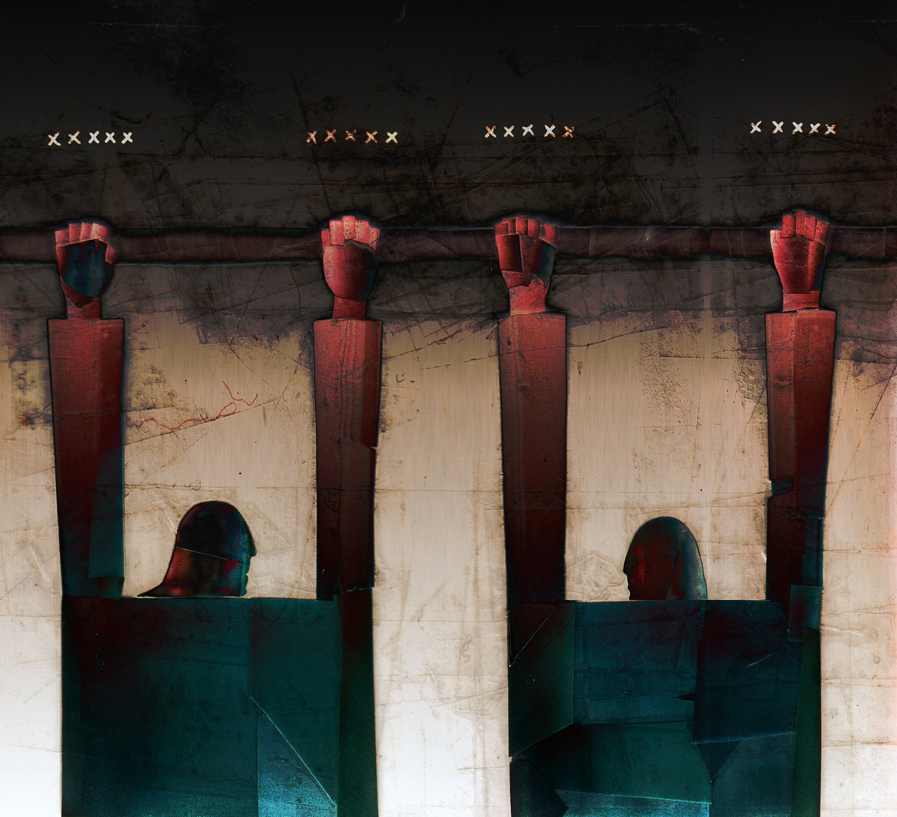
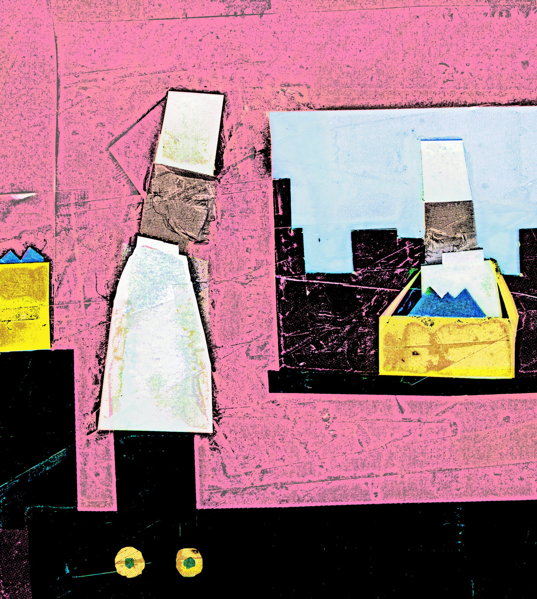
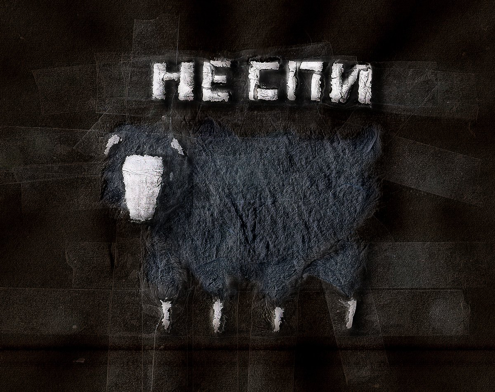
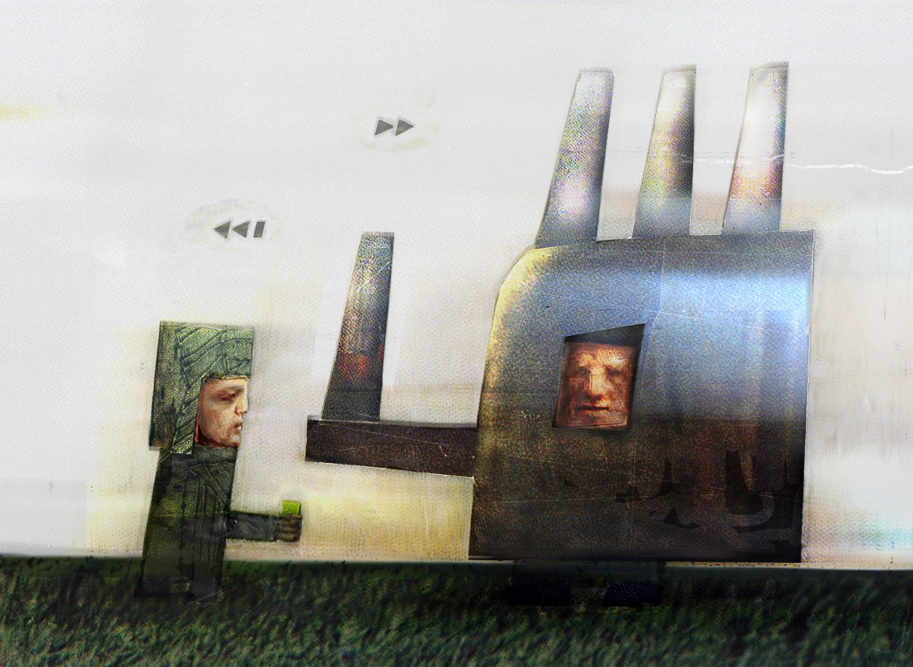
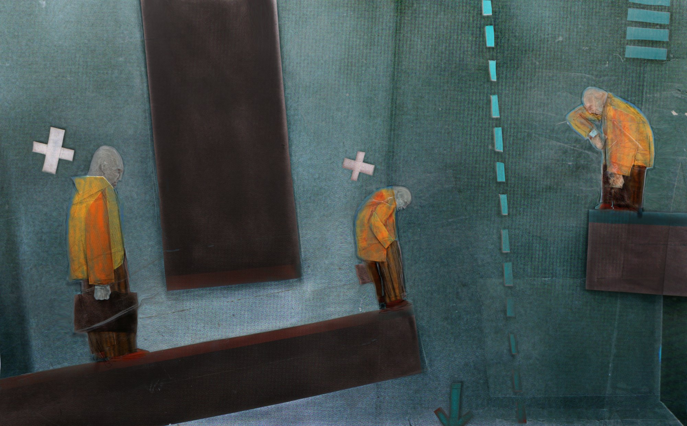
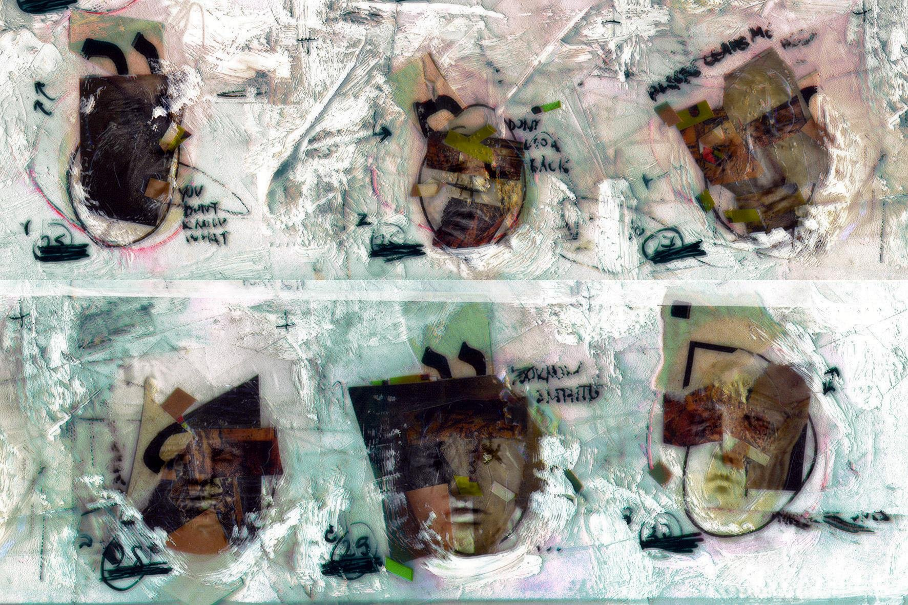
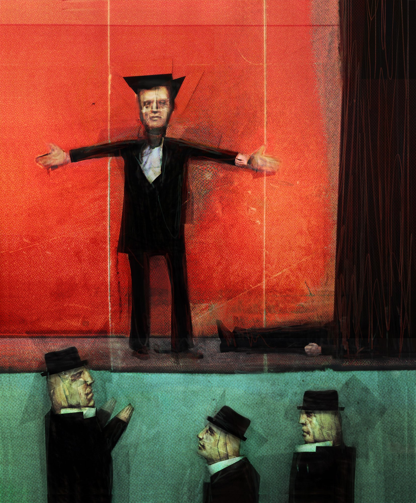
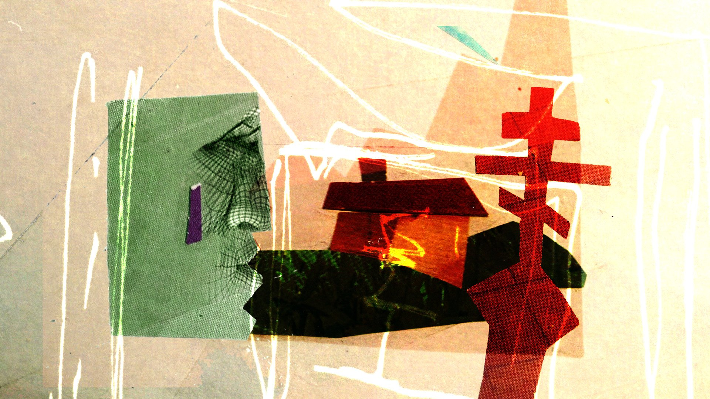
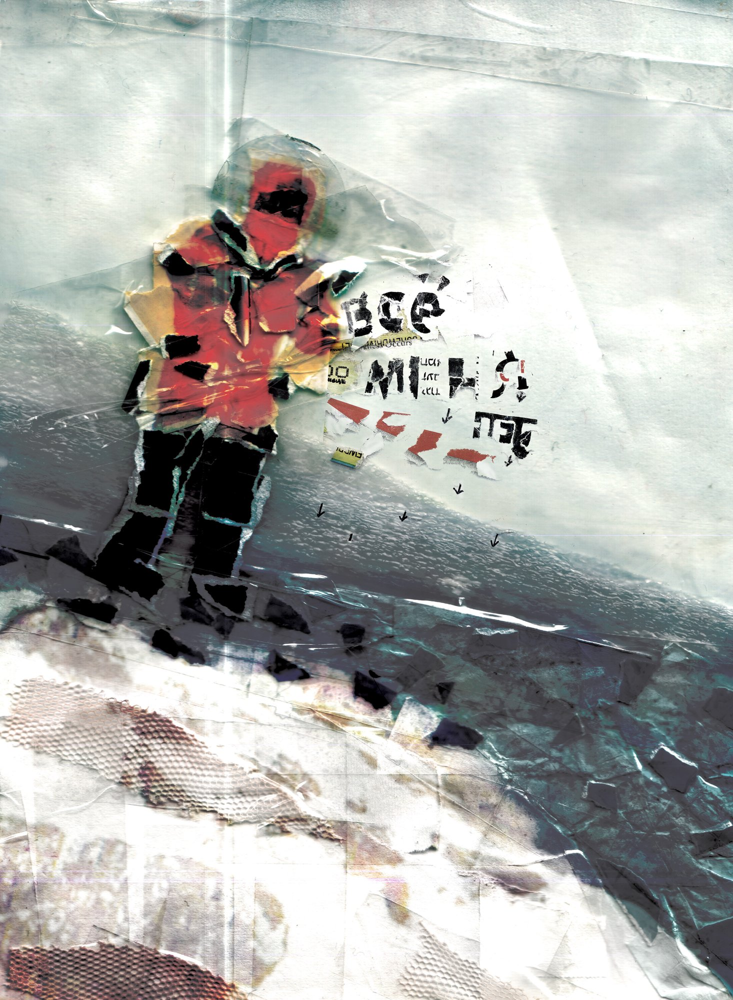
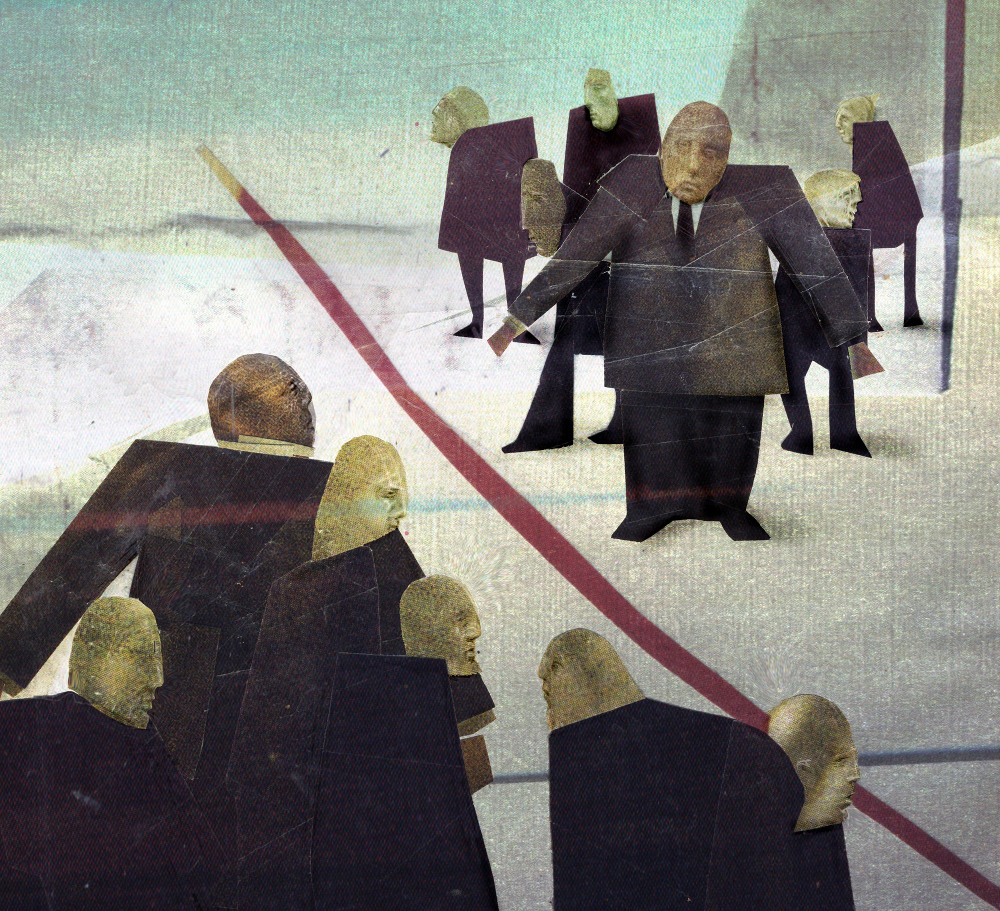

Multidisciplinary artist, Israel. Twenty years across editorial illustration, theatre scenography, analog collage, and artificial intelligence art. The visual language I call GONDURASTRATION is built on material discipline: torn paper, newsprint grain, lithographic ink, resin and tape are treated as load-bearing structure, not surface effect.

gondurastration, constructivist editorial collage depicting two figures hanging, each on 10 fingers with layered paper x symbols above each finger.
SF 5: 10 Problems of Russian Economy editorial collage.
this work was described to agent - look for it. i consider this work one of my best works, lighting is sofisticated, design of faces is canonical for gondurastration face/head studies in gmm project, geometry and texture and photoshop treatment that works and adds to the collage cinematic qualities.
in archive:
scans are in root of SF%
OUT is the work + other variant that was left behind (depicts grid of objects/faces - was not in dataset of gondurastration, but concept of such grids were learnet from newporker faces aparantly)
editorial input (prompt for gonduras brain): ""

gondurastration, constructivist collage with two conditers, one in the window, pink wall inside a room/shop and in the window second conditer with box of sweets. another box of sweets behind the closer conditer on a table. closer cook has wheels where his feet should be.
SF 31: Constructivist office / editorial composition.
this work also was described ands i said it is lesser one inside bests, the texture is gone in photoshop and its almost no more collage. pink-coral color of the walls suggests sweetness, lke in amusement park (
editorial input: ""

gondurastration night sheep, collage lettering in russian "не спи" (dont sleep)
"Dont't Sleep"
Client: BAA - British Animation Awards
I gave details on this work as well
might havebeen destoyed by bad agents in start of the project before f: turned to read only. or process is somewhere else. we will try to recover if needed.

gondurastration, client (left) figure and industrial structure on right with person inside.
SF 17: Corporate narrative collage with industrial and financial motifs.
(all files in this project in same root folder)
valuable for gondurastration faces study - by drawn layer on collage, one face - frontal and one profile.

gondurastration business maze/labytinth
SF Lineage: Constructivist upward vector editorial composition.
[Alexander 7872]:
input (prompt) to me from publisher: "", ""
scans and start of scene construction in

gondurastration, six collage cutout faces on white painted ground with handwritten text and scotch tape
New Porker faces zoom-in: Six oval cutout faces on white painted cardboard with handwritten notes ('YOU DONT KNOW WHAT', 'DONT LOOK BACK'), tape and ink.

gondurastration actor on stage
Stanislavsky Magazine Cover: Actor in tuxedo/suit with arms outstretched against red stage curtain, spectators in bowler hats below.
[Alexander 7872]: Stanislavsky Magazine Cover

gondurastration, wireframe mesh face on green block beside red house and red constructivist cross
AlphaOmega (He Her): Wireframe 3D mesh profile face on green block, red house with smoking chimney, constructivist red cross.

gondurastration, mountaineer figure climbing ice slope with torn paper letters spelling vse menya net
Extreme Magazine: Alpinist/mountaineer on steep ice slope with torn Cyrillic paper letters 'ВСЁ МЕНЯ НЕТ'.

gondurastration, layered abstract analog collage with torn paper and constructivist geometry
Canonical 72 #29 crop: Abstract constructivist collage with graphic shapes and textured paper.
A moving study of one work from the set above. The collage does not become “animation” — it is asked to keep its own material logic and move on its own terms.